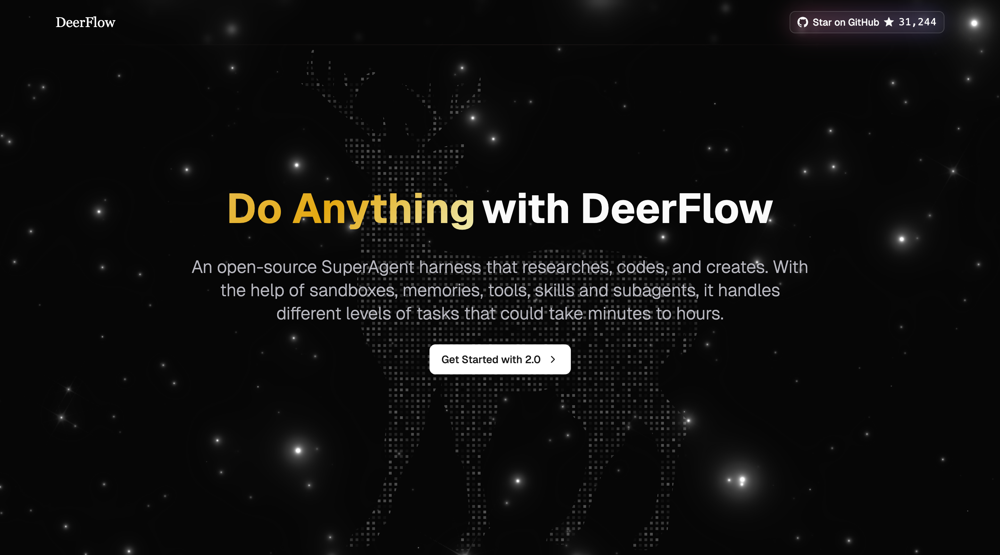

ByteDance's open-source DeerFlow 2.0 is a SuperAgent framework that autonomously handles long-horizon goals by running dozens of sub-agents simultaneously. It earned 2,394 GitHub stars on its launch day, hitting the top of trending. We analyze how this architecture accelerates the reality of an autonomous data operating system.
Mar 2026 · Pebblous Data Communication Team
~11 min read
이 글의 한국어 버전도 있습니다.
What Is DeerFlow 2.0?
On February 28, 2026, ByteDance released DeerFlow 2.0. The official description is concise: "An open-source super agent harness that orchestrates sub-agents, memory, and sandboxes to do almost anything."
Where v1 was a deep research tool, v2 is a complete ground-up rewrite — no shared code with the original. Built on an entirely new architecture, its purpose expanded fundamentally. Not just research, but code execution, slide generation, dashboard building, and data pipeline automation — any long-horizon task.
"The agent receives a goal, fans out into dozens of sub-agents, each explores a different angle, then converges into a single output."
— DeerFlow 2.0 official documentation
This fan-out/converge pattern is not a simple chain. It's AI performing the way humans lead teams — dividing work, running it in parallel, then integrating the results. DeerFlow is one of the first open-source implementations of this pattern.
3-Layer Architecture: Agents · Memory · Sandbox
The core of DeerFlow 2.0 is three layers working in organic combination. Built on LangGraph, each layer can scale independently while collaborating tightly.

Agent Layer
The lead agent decomposes goals and dynamically spawns sub-agents. Each sub-agent has its own independent context and tool access, isolated from parent and sibling agents.
Memory Layer
Long-term persistent memory that survives sessions. Accumulates user preferences, writing styles, and technical patterns. Prevents infinite growth by deduplicating facts, and guarantees data sovereignty through local storage.
Sandbox Layer
Isolated code execution environment. Three modes — Local (host machine), Docker container, Kubernetes pod — so you can match execution environment to your scale.
The Skill System: AI Capabilities Defined in Markdown
One of DeerFlow's most distinctive design choices is the Skill. A skill is a structured capability module defined in a Markdown file. Describe a workflow, best practices, and supporting resources in natural language — not code — and the agent interprets and executes it.
name: deep-research
version: 2.1
author: bytedance
---
# Deep Research Skill
When this skill is invoked:
1. Decompose the query into 5-8 research angles
2. Spawn parallel sub-agents for each angle
3. Use web_search + web_fetch for each agent
4. Synthesize results into structured report
Skills operate via Progressive Loading. Rather than pre-loading all skills into the context window, each skill is loaded only when needed. This strategy maximizes the 100k token context window for actual long-horizon task processing.
Built-in Skills
Skills can be packaged into .skill archives and shared. As the community ecosystem grows, DeerFlow could effectively become a "package manager for AI capabilities."
The Context Engineering That Makes Long-horizon Possible
For AI to handle hours-long tasks autonomously, the context window must never overflow. DeerFlow solves this problem in three ways.

1. Task Summarization
Instead of passing the full conversation history of completed sub-tasks, only compressed summaries are sent to the parent agent. Core information is preserved while token consumption is minimized.
2. Filesystem Offloading
Intermediate outputs (data, code, images, etc.) are saved to /mnt/user-data/workspace, and only the file path is kept in context. Large data is pushed out of memory entirely.
3. Sub-agent Context Isolation
Each sub-agent has its own independent context. It cannot see the context of parent or sibling agents, allowing it to focus on specialized tasks without unnecessary information contamination.
Key Insight
This design mirrors how human teams work. A team lead doesn't need to remember every detail — they receive summarized results. DeerFlow applies this principle to AI, handling dozens of long-horizon steps without hitting context window limits.
DeerFlow vs Existing Agent Frameworks
What sets DeerFlow 2.0 apart from existing agent frameworks is the combination of Long-horizon + open-source + sandbox.
| Feature | DeerFlow 2.0 | AutoGPT | CrewAI | OpenAI Swarm |
|---|---|---|---|---|
| Open Source | ✓ | ✓ | ✓ | ✓ |
| Sandboxed Code Execution | ✓ (3 modes) | △ (limited) | △ | ✗ |
| Long-term Memory | ✓ (local) | △ | △ | ✗ |
| Dynamic Sub-agent Spawning | ✓ (12+) | ✗ | ✓ | ✓ |
| Skill Modularity | ✓ (Markdown) | △ (plugins) | △ | ✗ |
| IM Channel Integration | ✓ (Slack/Telegram) | ✗ | ✗ | ✗ |
| LLM Agnosticism | ✓ (OpenAI-compatible) | △ | ✓ | △ (GPT-optimized) |
The Pebblous View: DataGreenhouse and Long-horizon Agents
The emergence of DeerFlow 2.0 directly intersects with Pebblous DataGreenhouse's vision of an autonomous data operating system. Four perspectives:
1. Data Pipeline Automation Becomes Real
It's no coincidence that DeerFlow cites "slide generation, dashboard building, and data pipeline automation" as community use cases. The core of DataGreenhouse — autonomous data operations including collection, cleansing, pipelines, and monitoring — is already within the application scope of Long-horizon Agents.
2. Skills = Domain Expertise as Code
DeerFlow's Markdown Skill concept codifies domain knowledge into reusable modules. In the DataGreenhouse context, defining "data quality diagnosis skill," "anomaly detection skill," and "synthetic data generation skill" would let non-developers delegate complex data tasks to agents.
3. Memory + Context = Long-term Data Project Management
Cross-session memory and filesystem offloading lay the foundation for agents to consistently execute data projects spanning days or weeks. An agent that remembers your data schema, business rules, and past decisions becomes more than a tool — it becomes a genuine data partner.
4. The Open-source Ecosystem Accelerates
ByteDance releasing architecture of this quality as open-source signals that the foundational technology of Agentic AI is commoditizing rapidly. The competitive differentiation point for DataGreenhouse is shifting — from infrastructure to domain knowledge and data quality.
"The emergence of DeerFlow signals the inflection point at which Long-horizon Agentic AI crosses from research into real data operations infrastructure."
— Pebblous Data Communication Team
Frequently Asked Questions
References
- • bytedance/deer-flow — GitHub (2026)
- • LangGraph Official Documentation — LangChain
- • Harrison Chase et al., "LangChain: Building applications with LLMs through composability" (2022)
- • Pebblous DataGreenhouse — pebblous.ai